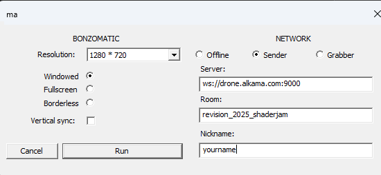

Revision 2025 :: Shader Jam¶
A Shader Jam will be held at Revision 2025 and you are all welcome to participate from all around the world.
It will be held durning Lynn set , Sunday 20 at 20:00 Berlin time (check with your timezone here)
Software used¶
The software used is Bonzomatic and can be found on the internet. Even if it's possible to have it running on most platform, it should be more stable on Windows as it was primarely developed for this platform.
For people not used to Bonzomatic, we recommand to prepare a little bit. Please install, configure and run the application some days before the jam so that you can verify it's properly working (especially for FFT).
Windows Users¶
- https://github.com/TheNuSan/Bonzomatic is the default verison that you can download.
- If you wish to have the "compute shader" feature, you need to download this version https://github.com/wrightwriter/Bonzomatic-Compute
Mac Users¶
There is no official pre-build version of Bonzomatic, you will have to build from source.
- https://github.com/TheNuSan/Bonzomatic is the default verison that you can download but there is several report of being very unstable.
- https://github.com/livecode-demoscene is a version that is precompiled and is less unstable but has less been battle tested.
Note that because of MacOS, it's not possible to have the "compute shader" feature.
Linux Users¶
There is no official pre-build version of Bonzomatic, you will have to build from source.
- https://github.com/TheNuSan/Bonzomatic is the default verison that you can download.
- https://github.com/livecode-demoscene is a version that is precompiled and is less unstable but has less been battle tested.
- If you wish to have the "compute shader" feature, you need to download this version https://github.com/wrightwriter/Bonzomatic-Compute
Extra textures¶
Some Extra textures are also available to use, you can check here how to get and install theses textures. It's optional so you can skip this if you want.
How to join¶
Windows¶
- Download, unzip and run Bonzomatic
- On the window make sure to enter theses information:
- Network :
senderselected - Server :
ws://drone.alkama.com:9000 - RoomName :
revision_2025_shaderjam - Nickname :
your_nickname
- Network :
- If there is no red square next to your name, you are connected
Mac and Linux¶
- Before running Bonzomatic, edit the
config.jsonand looks for thenetworkkey. Changes values so it looks like this :
{
"network": {
"enabled": true,
"serverURL": "ws://drone.alkama.com:9000/revision_2025_shaderjam/your_nickname",
"networkMode": "sender",
}
}
Join around 30min before the event so we wan deal with issue with everybody. You don't need to asks permission or anything, just connect as decribe above and you're in. If there is any issue we will try to ping you on discord.
Troubleshooting¶
- If you have problem connecting, replace
ws://drone.alkama.com:9000byws://37.187.21.171:9000